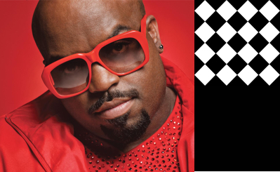
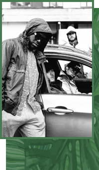
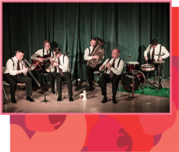

Фестиваль объединит в себе лучший опыт организации музыкальных событий и удивит гостей насыщенной программой: выступления зарубежных и отечественных джазовых коллективов, шахматный турнир на открытом воздухе, лекторий и лучшие гастрономические проекты Москвы. Фестиваль Chess & Jazz это место силы где встретятся стиль и интеллект.

CEELO GREEN — американский певец, рэпер, автор песен и продюсер, более известный под своим сценическим псевдонимом Си Ло Грин (CeeLo Green). Многократный обладатель премии Grammy, исполнитель хита группы Gnarls Barkley «Crazy», автор песни «F*ck You» и судья популярного американского шоу The Voice.
Cory Henry & Funk Apostles
Мультиинструменталист, мастер импровизации, участник команды Snarky Puppy, обладатель двух «Грэмми» — солидный набор для человека его возраста. Но свое место в джазовом пантеоне Генри занял вполне заслуженно — его техника игры на органе впечатляет (кстати, играть на нем он начал, когда ему было всего два года!). Кори Генри выступал вместе с легендарными Кенни Гарреттом, Брюсом Спрингстином, Робертом Глеспером и The Roots.

Kamaal Williams
Особое место в лайнапе Chess & Jazz займет звезда лондонского андеграунда Kamaal Williams, также известный под псевдонимом Henry Wu. Он представит в России свой новый альбом The Return, выпущенный в 2018 году. Широкую известность музыкант получил как продюсер и один из авторов знакового альбома Black Focus, выпущенного проектом Yussef Kamaal. Каждое выступление Kamaal Williams – это яркое импровизационное шоу, где ритмы джаз-фанка 70-х миксуются с битом, бассом и хип-хопом.
Secret Atelier
Если описывать Secret Atelier одним словом, то это будет «soul». Но музыка проекта лишний раз показывает, насколько широко это можно трактовать. Secret Atelier - это проект московской певицы Светы Жаворонковой и продюсера из Самары Ильи Попова. С 2017 года группа продвигает современное прочтение соула, замешанное на фанке, диско и хаусе. Стихия Secret Atelier — эклектичная и вневременная поп-музыка, которая стремится на танцпол. Их песни можно услышать в ротации Megapolis FM, а сингл "Prove Me Wrong", выпущенный на нью-йоркском лейбле King Street Sounds, уже этим летом будет играть на горячих танцполах Ибицы. Сейчас ребята работают над дебютным альбомом, песни с которого можно будет услышать у нас на фестивале

Moscow Ragtime Band
Moscow Ragtime Band – столичный ансамбль, исполняющий традиционный джаз первой половины ХХ века так же горячо и артистично, как это делали великие пионеры жанра в старые добрые времена! Участники Moscow Ragtime Band используют традиционные акустические музыкальные инструменты, и исполняют, возможно, самый энергетически заряженный и интерактивный джаз в мире – новоорлеанский. Яркое представление Moscow Ragtime Band захватывает публику, которая вместе с ансамблем становится участником праздника по-настоящему живой музыки.